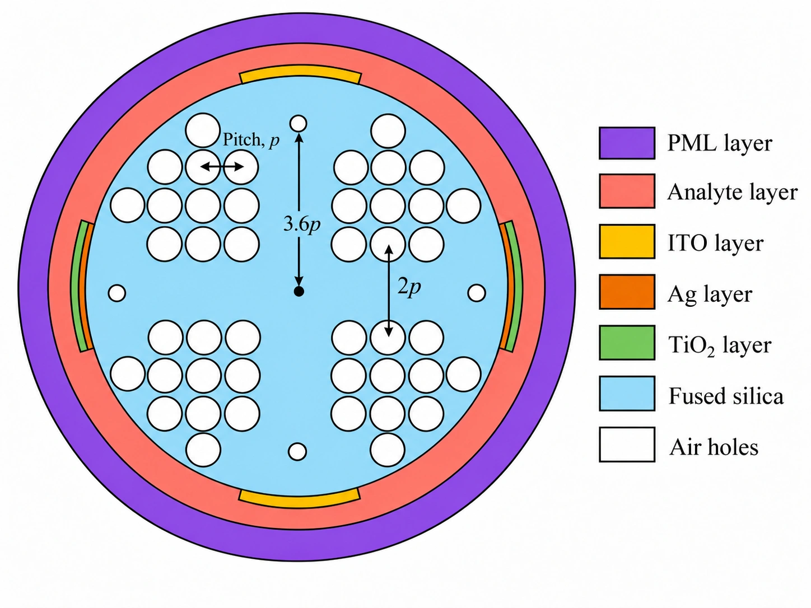
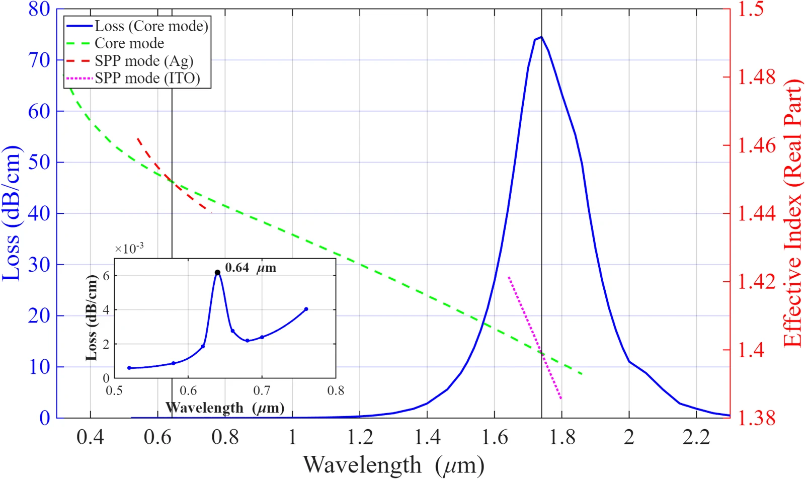

UNDERGRADUATE THESIS · 2025–2026
Quad-sector photonic crystal fiber sensor
A dual-resonance refractive-index sensor using spatially separated ITO and Ag–TiO₂ plasmonic regions. The team investigated how geometry and coating thickness influence the optical response.
My contribution
Built the sensor geometry from scratch in COMSOL Multiphysics and performed simulations.
Supervisor: Prof. Mohammad Rakibul Islam, Department of EEE, IUT.
26,000nm/RIU · maximum wavelength sensitivity
21,000nm/RIU · maximum dual-peak shift sensitivity
Best theoretical RI resolution: 3.85 × 10⁻⁶ RIU, assuming a detectable wavelength shift of 0.1 nm.
Numerical results over an analyte refractive-index range of 1.33–1.38. Fabrication and experimental validation remain future work.